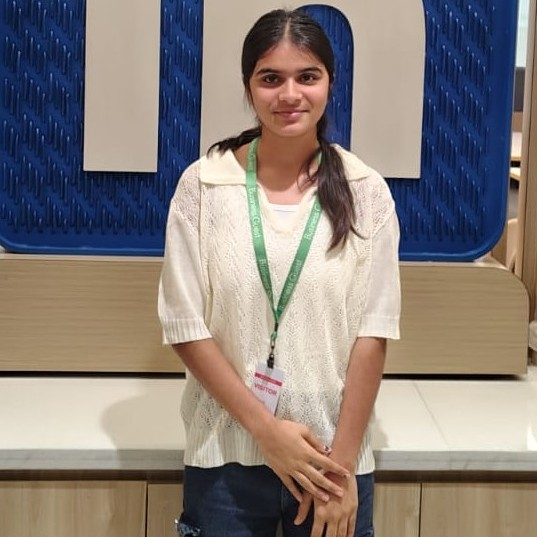
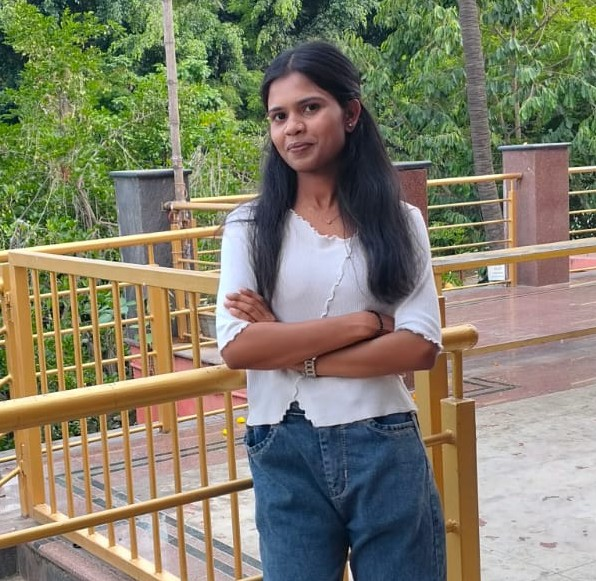
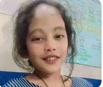

Meet Our Campus Councils
Meet the dedicated leaders and facilitators who guide, support, and maintain a positive, organized, and collaborative environment at NavGurukul Sarjapur Campus.
Discipline Coordinator(DISO)
Discipline Coordinator(Disco)
Sweta Mandal
The Discipline Coordinator maintains a safe, respectful
and disciplined campus environment for all students.
Conducts awareness activities to maintain discipline, encourages respectful behavior, and helps create a safe and positive campus environment.
Academic Facilitator(AF)
Shilpi Kumari
Academic Facilitator(AF)
Gayatri Barai
The Academic Facilitator supports students throughout their learning journey.
Academic Facilitator(AF)
Kashish Parmar
The Academic Facilitator supports students throughout their learning journey.
Organizes peer-learning sessions, supports doubt-solving activities, and encourages students to actively participate in academics.
Life Skill Facilitator(LSF)
Kumkum Thakur
Helps students build communication, confidence, and daily life skills.
English Facilitator(EF)
Nirjala Sharma
English Facilitator helps students improve their English communication skills, confidence, and fluency through guided practice and interactive learning sessions.
English Facilitator(EF)
Simran Singh Yadav
English Facilitator helps students improve their English communication skills, confidence, and fluency through guided practice and interactive learning sessions.
Organizes English speaking activities, group discussions, and practice sessions to improve fluency and confidence.
Management Facilitator(MF)
Shikha Kumari
Manages campus operations and ensures smooth daily functioning of the community.
Coordinates campus operations, manages daily resources, and supports smooth functioning of campus activities.
Food Coordinator(FC)

Shivani Mishra
Food Coordinator(FC)

Ankita Kushwah
The Food Coordinator manages food quality and daily meal arrangements on campus.
Monitors food quality, collects student feedback, and helps improve meal management on campus.
IT Coordinator(IT)
Prachi Deshmukh
The IT Coordinator manages technical resources and supports the smooth functioning of campus technology and digital systems.
Supports technical systems, manages digital resources, and helps students resolve basic technology-related issues.
Health Coordinator(HC)
Tara Dangwal
Health Coordinator(HC)

Mamta Dangwal
Supports student health, hygiene, and overall well-being on campus.
Promotes hygiene awareness, supports student well-being, and encourages healthy habits and routines on campus.
Workout Facilitator
Archana Pal
Encourages fitness, physical activities, and healthy daily routines among students.
Organizes fitness activities, encourages regular exercise, and promotes healthy physical routines among students.
Outreach Facilitator
Gourinandani Nagwat
Supports campus communication, outreach activities, and community engagement initiatives.
Supports outreach programs, manages communication activities, and strengthens community engagement initiatives.
Induction Facilitator
Sejal Rajput
Supports new students during their initial campus learning and orientation journey.
Helps new students adjust to campus life by conducting orientation and introductory learning activities.
Onboarding Facilitator
Dipanshi Singh
Supports and guides new students during their initial campus journey and onboarding process.
Guides new students through onboarding processes and supports their smooth transition into the campus community.